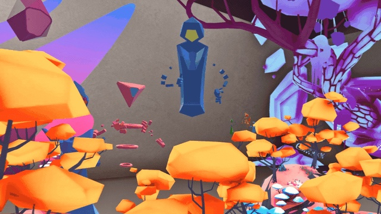

01
Museum of Other Realities
social vr, other peoplei started the museum of other realities as a social space for creatives prototyping new forms of cultural production. the museum was the official virtual platform for Cannes xr, tribeca, newimages, and viff immersed. mor was also a finalist for immersive reality technical achievement at the d.i.c.e. awards.